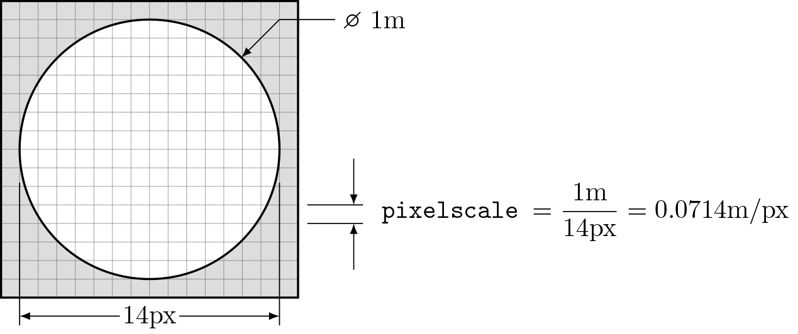
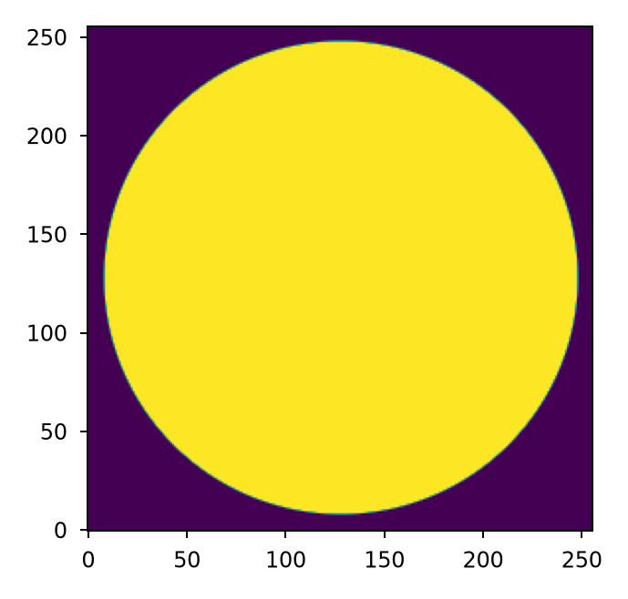
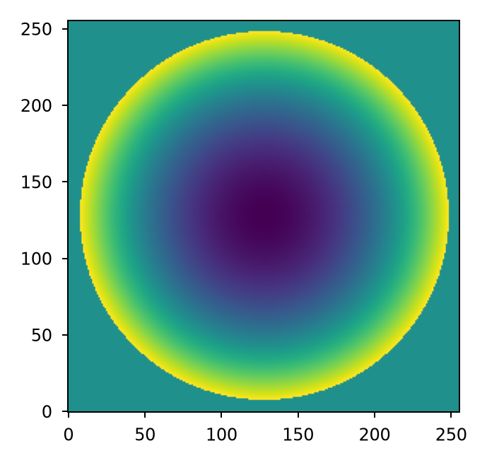
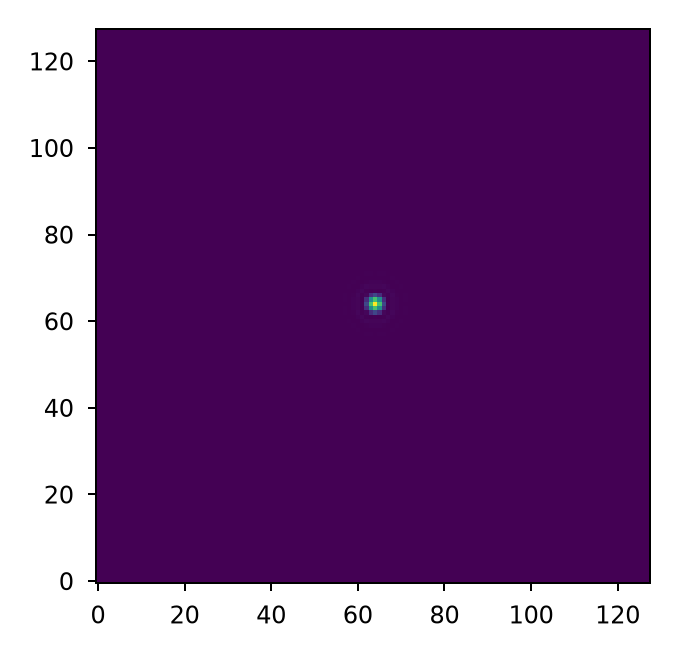
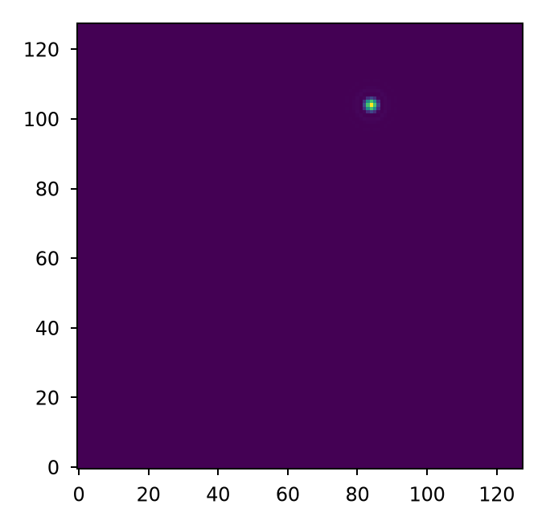
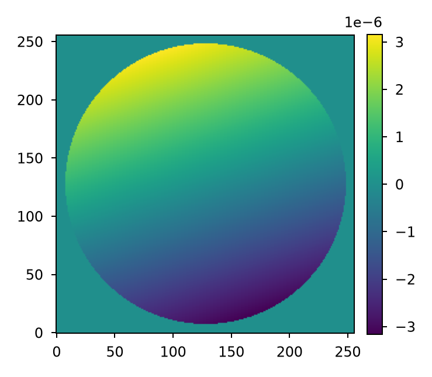

Specifying planes#
Lentil plane types#
All Lentil planes are derived from the Plane class. This base class defines the
interface to represent any discretely sampled plane in an optical model. It can also
be used directly in a model. Planes typically have some influence on the propagation
of a wavefront though this is not strictly required and some models may use dummy
or reference planes as needed.
Lentil provides several general planes that are the building blocks for most optical models:
The
Planebase class provides the core logic for representing and working with discretely sampled planes in an optical model.The
Pupilplane provides a convenient way to represent a pupil plane in an optical system. There is nothing particularly special about pupil planes, they merely provide a convenient location (mathematically-speaking) to enforce limiting apertures or stops and include optical aberrations. More detailed discussion of pupil planes is available in [1].The
Imageplane provides a location where the image formed by an optical system may be manipulated or viewed.The
Detectorplane is conceptually identical to the Image plane but is optimized to very efficiently compute intensity from a complex field.
In addition, several “utility” planes are provided. These planes do not represent physical components of an optical system, but are used to implement commonly encountered optical effects:
Plane#
Lentil’s Plane class represents a discretely sampled plane in an optical model. Planes
have attributes for representing the sampled complex amplitude of the plane as well as
additional metadata that may influence how a propagating wavefront interacts with the
plane. A plane is defined by the following parameters:
amplitude- Defines the relative electric field amplitude transmission through the planephase- Defines the electric field phase shift that a wavefront experiences when propagating through the planemask- Defines the binary mask over which the plane data is valid. If mask is 2-dimensional, the plane is assumed to be monolithic. If mask is 3-dimensional, the plane is assumed to be segmented with the individual segment masks inserted along the first dimension. If mask is not provided, it is automatically created as needed from the nonzero values inamplitude.

pixelscale- Defines the physical sampling of each pixel in the above attributes. A simple example of how to calculate the pixelscale for a discretely sampled circular aperture is given below:
Note
All Plane attributes have sensible default values that have no effect on propagations when not defined.
Create a new Plane with
>>> import matplotlib.pyplot as plt
>>> import lentil
>>> p = lentil.Plane(amplitude=lentil.util.circle((256,256), 120))
>>> plt.imshow(p.amplitude, origin='lower')

Once a Plane is defined, its attributes can be modified at any time:
>>> import matplotlib.pyplot as plt
>>> import lentil
>>> p = lentil.Plane(amplitude=lentil.util.circle((256,256), 120))
>>> p.phase = 2e-6 * lentil.zernike(p.mask, index=4)
>>> plt.imshow(p.phase, origin='lower')

Resampling or rescaling a Plane#
It is possible to resample a plane using either the resample()
or rescale() methods. Both methods use intrepolation to
resample the amplitude, phase, and mask attributes and readjust the pixelscale
attribute as necessary. The default behavior is to perform this interpolation
on a copy of the plane, but it is possible to operate in-place by setting
inplace=True.
Fitting and removing Plane tilt#
The plane’s fit_tilt() method performs a least squares fit to
estimate and remove tilt from the phase attribute. The tilt removed from the phase
attribute is accounted for by appending an equivalent Tilt object
to the plane’s tilt attribute. The default behavior is to
perform this operation on a copy of the plane, but it is possible to operate
in-place by setting inplace=True.
See user_guide.diffraction.tilt for additional information on when to use this method.
Pupil#
Lentil’s Pupil class provides a convenient way to represent a generalized pupil
function. Pupil planes behave exactly like Plane objects but introduce an implied
spherical phase term defined by the focal_length attribute. The
spherical phase term is opaque to the user but is given by
where \(f\) is the focal length and \(x\) and \(y\) are pupil plane coordinates.
A pupil is defined by the following required parameters:
focal_length- The effective focal length (in meters) represented by the pupilpixelscale- Defines the physical sampling of each pixel in the discretely sampled attributes described below
Discretely sampled pupil attributes can also be specified:
amplitude- Defines the relative electric field amplitude transmission through the pupilphase- Defines the electric field phase shift that a wavefront experiences when propagating through the pupil. This term is commonly known as the optical path difference (OPD).mask- Defines the binary mask over which the pupil data is valid. If mask is 2-dimensional, the pupil is assumed to be monolithic. If mask is 3-dimensional, the pupil is assumed to be segmented with the segment masks allocated along the first dimension. If mask is not provided, it is automatically created as needed from the nonzero values inamplitude.
Note
All optional Pupil attributes have sensible default values that have no effect on propagations when not defined.
Create a pupil with:
>>> p = lentil.Pupil(focal_length=10, pixelscale=1/100, amplitude=1, phase=0)
Image#
Lentil’s Image plane is used to either manipulate or view a wavefront at a focal point
in an optical system. An image plane does not have any required parameters although any
of the following can be specified:
pixelscale- Defines the physical sampling of each pixel in the image plane. If not provided, the sampling will be automatically selected to ensure the results are at least Nyquist sampled.shape- Defines the shape of the image plane. If not provided, the image plane will grow as necessary to capture all data.amplitude- Definers the relative electric field amplitude transmission through the image plane.phase- Defines the electric field phase shift that a wavefront experiences when propagating through the image plane.
Detector#
Lentil’s Detector plane is used to accumulate the intensity in an image plane.
Intensity is computed as the absolute value of the complex amplitude in the image plane
squared:
Similar to the Image plane, a detector plane does not have any required parameters
although any of the following can be specified:
pixelscale- Defines the physical sampling of each pixel in the image plane. If not provided, the sampling will be automatically selected to ensure the results are at least Nyquist sampled.shape- Defines the shape of the image plane. If not provided, the image plane will grow as necessary to capture all data.
While an Image plane can be used to compute intensity, the Detector plane implements
an algorithm that greatly reduces the memory footprint and increases the speed of this
operation. Details of this algorithm are available in the Technical Notes.
Tilt#
The Tilt plane provides a mechanism for directly specifying wavefront
tilt outside of the context of a discretely sampled Plane object. Tilt
is most useful for representing global tilt in an optical system (for example, due to a
pointing error).
Given the following Pupil and Detector planes:
>>> import matplotlib.pyplot as plt
>>> import lentil
>>> pupil = lentil.Pupil(amplitude=lentil.util.circle((256, 256), 120),
... focal_length=10, pixelscale=1/250)
>>> w = lentil.Wavefront(650e-9)
>>> w *= pupil
>>> w = w.propagate_image(pixelscale=5e-6, npix=(64,64), oversample=2)
>>> plt.imshow(w.intensity, origin='lower')

It is simple to see the effect of introducing a tilted wavefront into the system:
>>> import matplotlib.pyplot as plt
>>> import lentil
>>> pupil = lentil.Pupil(amplitude=lentil.util.circle((256, 256), 120),
... focal_length=10, pixelscale=1/250)
>>> tilt = lentil.Tilt(x=10e-6, y=-5e-6)
>>> w = lentil.Wavefront(650e-9)
>>> w *= pupil
>>> w *= tilt
>>> w = w.propagate_image(pixelscale=5e-6, npix=(64,64), oversample=2)
>>> plt.imshow(w.intensity, origin='lower')

Specialized planes#
Grism#
A grism is a combination of a diffraction grating and a prism that creates a dispersed spectrum normal to the optical axis. This is in contrast to a single grating or prism, which creates a dispersed spectrum at some angle that deviates from the optical axis. Grisms are most commonly used to create dispersed spectra for slitless spectroscopy or to create interference fringes for dispersed fringe sensing.
Lentil’s Grism plane provides a straightforward mechanism for
efficiently modeling a grism.
Active optics and deformable mirrors#
Active optics and deformable mirrors are easily represented by defining a phase that
depends on some parameterized state. Because there is no standard architecture for these
types of optical elements, Lentil does not provide a concrete implementation. Instead,
a custom subclass of either Plane or Pupil should be defined. The exact
implementation details will vary by application, but a simple example of a tip-tilt
mirror where the plane’s phase is computed dynamically based on the state x is
provided below. Additional examples can be found in Model Patterns under
Planes.
import lentil
import numpy as np
class TipTiltMirror(lentil.Plane):
def __init__(self):
self.amplitude = lentil.circle((256,256),120)
self.x = np.zeros(2)
# Note that we set normalize=False so that each mode spans [-1, 1] and then
# multiply by 0.5 so that each mode has peak-valley = 1
self._infl_fn = 0.5 * lentil.zernike_basis(mask=self.amplitude,
modes=[2,3],
normalize=False)
@property
def phase(self):
return np.einsum('ijk,i->jk', self._infl_fn, self.x)
>>> tt = TipTiltMirror()
>>> tt.x = [1e-6, 3e-6]
>>> plt.imshow(tt.phase)
>>> plt.colorbar()

Customizing Plane#
The Plane class or any of the classes derived from Plane can be subclassed to modify any of the default behavior. Reasons to do this may include but are not limited to:
Dynamically computing the
phaseattributeChanging the Plane-Wavefront interaction by redefining the Plane.multiply() method
Modifying the way a Plane is resampled or rescaled
Some general guidance for how to safely subclass Plane is provided below.
Note
Lentil’s Plane class and its subclasses all use Python’s __init_subclass__()
method to ensure any required default values are set - even if a user-defined
subclass does not explicitly call Plane’s constructor __init__() method. For
this reason, it is not strictly necessary to call super().__init__() when
implementing a custom Plane subclass. It also won’t hurt, as long as you’re careful
to either call super().__init__() before defining any static plane attributes or
passing these attributes along to the super().__init__() call to ensure they are
properly set.
Redefining the amplitude, phase, or mask attributes#
Plane amplitude, phase, and
mask are all defined as properties, but Python allows you to
redefine them as class attributes without issue:
import lentil
class CustomPlane(le.Plane):
def __init__(self):
self.amplitude = lentil.circle((256,256), 128)
self.phase = lentil.zernike(lentil.circlemask((256,256),128), 4)
If more dynamic behavior is required, the property can be redefined. For example, to
return a new random phase each time the phase attribute is
accessed:
import numpy as np
import lentil
class CustomPlane(lentil.Plane):
def __init__(self):
self.mask = lentil.circlemask((256,256), 128)
self.amplitude = lentil.circle((256,256), 128)
@property
def phase(self):
return lentil.zernike_compose(self.mask, np.random.random(10))
It is also straightforward to implement a custom phase property to
provide a stateful phase attribute:
import numpy as np
import lentil
class CustomPlane(lentil.Plane):
def __init__(self, x=np.zeros(10)):
self.mask = lentil.circlemask((256,256), 128)
self.amplitude = lentil.circle((256,256), 128)
self.x = x
@property
def phase(self):
return lentil.zernike_compose(self.mask, self.x)
Note
Polychromatic or broadband diffraction propagations access the phase, amplitude, and mask attributes for each propagatioon wavelength. Because these attributes remain fixed during a propagation, it is inefficient to repeatedly recompute them. To mitigate this, it can be very useful to provide a mechanism for freezing these dynamic attributes. There are many ways to do this. One approach is provided below:
import copy
import numpy as np
import lentil
class CustomPlane(lentil.Plane):
def __init__(self):
self.mask = lentil.circlemask((256,256), 128)
self.amplitude = lentil.circle((256,256), 128)
@property
def phase(self):
return lentil.zernike_compose(self.mask, np.random.random(10))
def freeze(self):
# Return a copy of CustomPlane with the phase attribute redefined
# to be a static copy of the phase when freeze() is called
out = copy.deepcopy(self)
out.phase = self.phase.copy()
return out
Customizing Plane methods#
Any of the Plane methods can be redefined in a subclass without restriction. Care
should be taken to ensure any redefined methods return data compatible with the
parent method’s return type to preserve compatibility within Lentil.